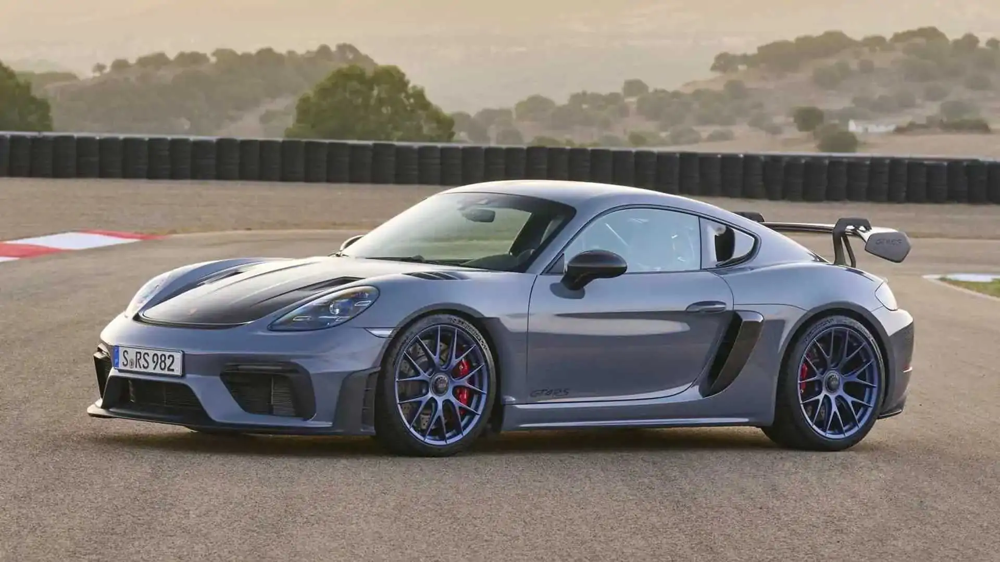

Família 718 · GT4 RS
718 Cayman GT4 RS.
Motor central. Personalidade intensa. Um esportivo que aproxima quem dirige da experiência mecânica e da emoção de cada curva.
Explorar os detalhes ↓Performance
Feito para envolver.
- Potência
- 500 cv
- 0 a 100 km/h
- 3,4 s
- Velocidade máxima
- 315 km/h
Dados de fábrica do 718 Cayman GT4 RS 4.0. Aceleração com Launch Control.
Conexão com a experiência
O motor no centro da história.
Posicionado entre os ocupantes e o eixo traseiro, o motor boxer aspirado de 4,0 litros entrega 500 cv e pode atingir 9.000 rpm. A transmissão PDK de sete marchas completa o conjunto.
A construção leve e a atenção à aerodinâmica acompanham a proposta do GT4 RS. É uma interpretação da família 718 voltada a quem valoriza a precisão e o envolvimento ao dirigir.
Ver carrinho →| Motor | Boxer aspirado de 6 cilindros |
|---|---|
| Cilindrada | 4,0 litros |
| Posição do motor | Central |
| Potência | 500 cv |
| Transmissão | PDK de 7 marchas |
| 0 a 100 km/h | 3,4 s com Launch Control |
| Velocidade máxima | 315 km/h |